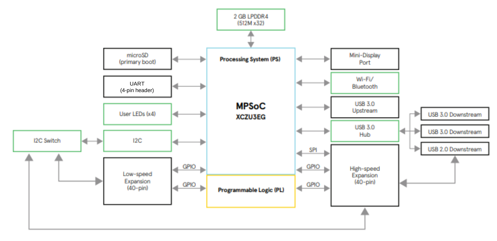
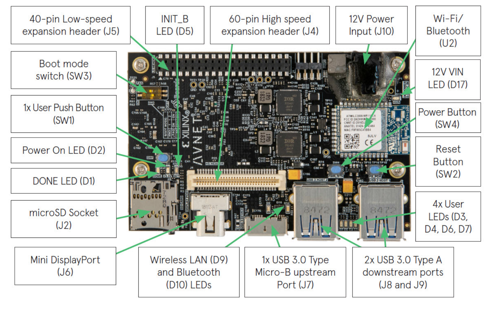
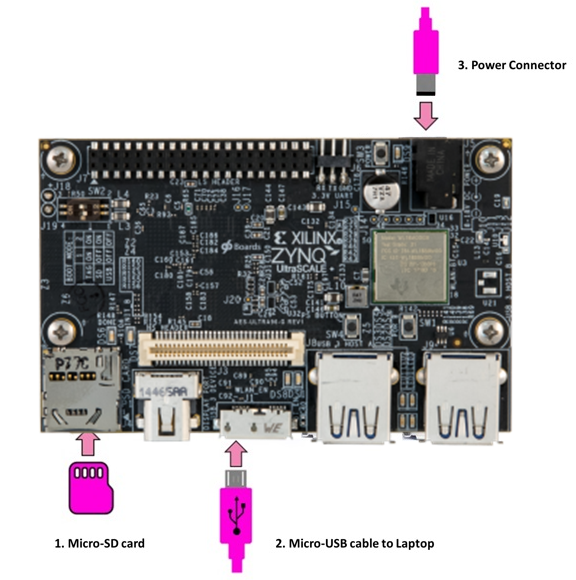
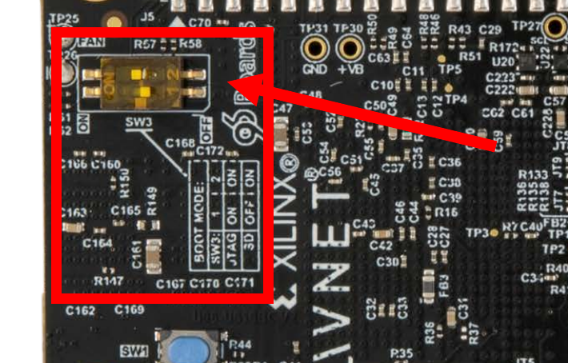

Ultra96-V2¶
1. Introduction Ultra96-V2¶

Component |
Description |
|---|---|
SoC |
Xilinx Zynq UltraScale+ MPSoC ZU3EG A484 |
RAM |
Micron 2 GB (512M x32) LPDDR4 Memory |
SD-Flash |
Delkin 16 GB microSD card + adapter |
GUI |
Downloadable SD card image for Linux OS with desktop environment |
Networking |
Microchip Wi-Fi / Bluetooth |
Connections |
1x USB 3.0 Type Micro-B upstream port |
Expansion |
40-pin 96Boards Low-speed expansion header |
Graphics |
Mini DisplayPort (MiniDP or mDP) |
Xilinx Zynq UltraScale+ MPSoC¶
Xilinx Zynq UltraScale+ MPSoC ZU3EG
CPU: Quad-core ARM Cortex-A5
CPU: Dual-core ARM Cortex-R5F, TCM
GPU: Mali-400 MP2
FPGA: 154K Programmable Logic Cells
256KB On-Chip Memory w/ECC
UART
CAN
USB 2.0
I2C
SPI
32b GPIO
Real Time Clock
WatchDog Timers
Triple Timer Counter
Ultra96 Block Diagram¶

2. Setup¶
2.1 Prepare SD card¶
Download sd card image ultra96v2_v2.6.0.img from ftp://jupiter-win.zhaw.ch/shared/ (using an FTP client or a browser, must be connected to ZHAW network) with the credentials:
Username: mpcro
Password: mpcro
Write image to the SD card, you can either use:
Etcher.io utility
dd on unix based systems:
# byte copy image to /dev/sdX
dd if=./ultra96v2_v2.6.0.img of=/dev/sdX bs=4M
# Bytecopy with progress bar
dd if=./ultra96v2_v2.6.0.img | pv -s 8G | dd of=/dev/mmcblk0 bs=4M
The image contains the PYNQ distribution for the Ultra96, it is an Ubuntu-based Linux OS.
2.2 Connect the Ultra96¶
Plug in the cables as shown in the figure below.

2.3 Boot Linux from SD-card¶
The SoC boot mode is configured by the SW3 DIP switch. Verify that the switch is set accordingly:
Switch |
Position |
|---|---|
1 |
OFF |
2 |
ON |

Insert SD-Card and boot by pressing the power-on switch. When done one user led blinks (Linux heartbeat).
2.4 Access the Ultra96-V2¶
The PYNQ image provides ethernet over USB and a serial connection. Access the board either via serial:
- 115200 baud
- 8 data bits
- 1 stop bit
- No Parity
- No Flow Control
Or using SSH with the credentials:
- Username: xilinx
- Password: xilinx
The IP address is either 192.168.3.1 (when using ethernet over USB), or can be found by issuing the ip address command in a console.
Configure the WiFi in order to have a connection to the internet by modifying the file /boot/boot.py (e.g. by using sudo nano /boot/boot.py ), add the following lines and insert your WiFi information.
from pynq.lib import Wifi
port = Wifi()
port.reset()
port.connect('your_ssid', 'your_password', auto=True)
To reload the configuration a reboot is required sudo reboot, after that the board should automatically connect to your network.
2.5 Access the Ultra96 files¶
We will use the samba share to edit the files and will compile programs using the console.
To connect using Windows, type \\192.168.3.1\xilinx in the address bar of the file explorer and access using the same credentials as above (xilinx:xilinx). Then you can navigate the folders in the home directory (/home/xilinx/) and edit files using a text editor or IDE.
For Linux use the URL smb://192.168.3.1/xilinx with your file manager.
A Jupyter Notebook is availabe at http://192.168.3.1 (password xilinx), from here Python development is possible.
3. First steps¶
3.1 Hello, World!¶
To compile programs we use the gcc compiler available in the distribution, in this section an example program is created and compiled. To automate compilation the make system is used by creating a Makefile.
Connect to the U96 via USB or WiFi
Open a terminal either via a serial connection or via SSH
Connect to the samba share to edit files with the host
Create a folder in the home directory and add the source file as hello.c, example code provided below
Add the Makefile, an example is provided below
In the console run
make helloExecute the program with
./hello
Example code¶
#include <stdio.h>
int main(){
printf("Hello, World!\n");
return 0;
}
Example Makefile¶
CC=gcc
.PHONY: hello
hello:
$(CC) -Wall hello.c -o hello
Further reading:
3.2 Useful programs¶
The running processes as well as the system usage can be shown with the command htop.
Information about the CPU can be printed with lscpu.
To install programs and libraries the apt package system is used:
Update catalog of available programs:
sudo apt updateInstall a program/library:
sudo apt install program
For further information refer to APT Guide or the man page.